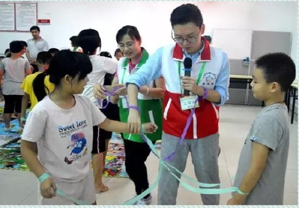

隋双戈
心理应激干预专家 |心理危机团体干预“简快重建法”创立者
2007-10-15 13:01:00
个人简介
隋双戈，医学博士(应激干预方向) ，MBA，中国心理学会注册督导师，国际催眠治疗师(M.E.G.)，欧洲认证EMDR心理创伤治疗督导师(E.E.A.)，厦门大学实践导师。首届深圳市“百名优义工”，深圳市“五星级义工”，创建全国文明城市先进个人。
从2000年起从事心理咨询工作，整合创立了心理应激团体干预“简快重建”法，中国大陆第一位获得欧洲认证的EMDR心理创伤治疗督导师证书的男督导师；中国心理卫生协会EMDR创伤心理治疗学组常务理事，中国心理学会会员，中国神经科学学会会员，全国联合抗震救灾心理救援专家组成员，中华社会救助基金会、儿童安全基金女童保护项目专家顾问，深圳市心理危机干预专业委员会委员。
多次应邀在世界心理大会、世界精神病学大会等国内外专业会议上发表演讲；创办的心理干预公益项目获得亚洲家庭研究联盟“杰出奖”；央视一台及省市媒体特邀嘉宾，广东卫视《权威访谈》、湖南卫视、深圳卫视等专访人物，国内外媒体大量报道。
擅长处理压力、焦虑、恐惧、危机事件及引发的各类问题。主要提供督导、培训、咨询。
为数十家企事业单位、政府部门提供过培训、讲座。为十余家企业（国有大型、合资、外资等）、学校、政府机构提供了重大应激事件（自杀事件、事故、人身伤害等）后的即时服务或持续的服务，服务对象包括员工、工作人员、家属等。
服务内容包括加入危机干预小组提供支持，提供系统的危机干预团体辅导、小组辅导或个体心理服务，以及自杀预防、哀伤辅导、心理减压培训等。
在国内外发表专业论文二十余篇，其中SCI三篇，SSCI三篇，国家一级核心期刊十余篇，参与国家自然科学基金、国家科技支持计划等多项国家级科技基金课题。
Email: sui@858.org.cn 微信订阅号：newlife858 (压力管理顾问)
微信：wangxinkong Blog：http://blog.sina.com.cn/shuanggesui
主要获奖
2014年5月，首届国家治理高峰论坛暨治理创新100佳优秀成果大型调查活动“十佳慈善公益中国经验”《性侵遭遇者及家庭援助项目》发起人、总督导。
2010年11月，深圳市第二届公益电视大赛“十佳公益创意项目”《四社联动心理创伤干预项目》顾问。
2014年5月，首届国家2010年8月，中国神经科学学会精神病学基础与临床分会，“第七届全国学术会议优秀博士论文奖”《性侵害创伤干预模式、性侵害PTSD 患者心理社会因素及脑结构功能特征研究》
2010年8月，中国神经科学学会精神病学基础与临床分会，“第七届全国学术会议优秀博士论文奖”《性侵害创伤干预模式、性侵害PTSD 患者心理社会因素及脑结构功能特征研究》
2008年，共青团中央“抗震救灾优秀志愿服务集体”“深圳青年义工突击队”成员，负责心理干预与评估工作。
2005年11月，深圳市委、市政府，“创建全国文明城市先进个人”。
2005年3月，共青团深圳市委，深圳市劳动和社会保障局、中国青年报、深圳特区报“首届深圳百名优秀义工”。
2003年，深圳市义工联“五星级义工”
提供过服务的部分单位名录 （包括但不限于）
Humanitarian Assistance Program Europe (HAP) and Trauma AID Germany, Humanitarian Assistance Program Germany (HAP – Germany), Himpsi Jaya (Indonesia) and Psychotrauma Centre of Faculty of Medicine, Chulalongkorn University (Thailand)、中国心理学会、中国心理卫生协会、中国神经科学学会、团中央权益部12355青少年服务台、中国广东核电集团、中国移动湖北公司、中航集团、中国性侵害预防网、云南省心理卫生中心、吉林省心理学会心理危机干预委员会、海南省12355青少年综合服务台、深圳市人力资源和社会保障局、深圳海关、深圳国检局、绵竹市教育局、深圳龙岗区城管局、中南大学、中山大学、哈尔滨工业大学、湖南师范大学、深圳大学、深圳团校（青年学院）、深圳电大、深圳市义工联合会、深圳市信息无障碍研究会、深圳市宝安区义工联合会、长春市心理医院、深圳市精神卫生中心、辽宁抚顺煤矿脑科医院、残友集团、SGS-CSTC Standards Technical Services Co. (Shenzhen Branch)、深圳澳星视听设备公司、赛意法微电子有限公司、惠州德赛电池有限公司、成都怡馨心理咨询有限公司、惠州市心理协会、惠州心灵花园心理咨询有限公司、深圳金玉心理咨询有限公司、深圳竹海心理咨询有限公司，深圳市融雪盛平社工服务中心、春风网——心理创伤援助公益平台……
[心理咨询师督导] （包括但不限于）
国际创伤EMDR心理治疗师连续培训项目（Bankok、Chiengmai、昆明、成都、杭州班）、中国性侵害预防网（“春风计划”援助性侵害遭遇者项目）、北京大学（“让家守护心灵”流动儿童家庭帮助计划）、苏州大学心理咨询中心、春风网——心理创伤援助公益平台（“留守不流泪”关注留守儿童项目、“四社联动心理创伤干预项目”、“相约星期三”自杀者亲友援助计划、“春晖行动”残友助心行动）、海南省12355青少年服务台、深圳市义工联合会12355热线、深圳市罗湖区义工联合会、512心理援助志愿者团队、深圳阳光驿站心理咨询有限公司、深圳市诺方舟心理咨询有限公司、惠州山水心理咨询有限公司、深圳市融雪盛平社工服务中心……
主要课程
1、“走过寒冬是暖春”系列：
- 《危机事件后团体心理辅导》
- 《应激事件简快重建法团体干预培训》（心理干预人员专业培训）
- 《性侵的预防与应对》
- 《居丧干预工作人员培训》
- 《心理热线咨询入门与提升》
- 《心理创伤自助疗愈》
2、“绝处逢生”系列：
- 《心理危机的识别与干预》
- 《自杀的预防与应对》
- 《压力管理》
- 《焦虑管理》
- 《行政执法中的冲突管理》
部份相关报道
- 中国文明网：《隋双戈：用“春风”融化“坚冰”》
- 北京青年报：“隋处可见”博士 做救命的一根稻草
- 深圳特区报：《为心理创伤患者提供专业呵护——记隋双戈和他的草根NGO》 （普通人、专业事、公益心，“春风网”背后的故事）
- 南方日报《人物档案》：《让“春风”吹散她们的阴影》（厚于德、诚于信、敏于行——新时代的广东精神）
【已发表论著】
Shuang Ge Sui, Mark E. King, Ling Sophia Li, Liu Yue Chen, Yan Zhang & Ling Jiang Li. Posttraumatic stress disorder among female victims of sexualassault in China: prevalence and psychosocial factors. Asia-Pacific Psychiatry. 2014(6):405–413 Sui, S. G., Li, L. J., Zhang, Y., Wu, M. X. & King, M. E.. Abnormal Brain Density in Victims of Rape with PTSD in Mainland China: a Voxel-Based Analysis of Magnetic Resonance Imaging Study. In: PERES, D. J. (ed.) Neuroimaging. Rieka, Croatia: Intech, 2011. 隋双戈, 黄晓鹏, 王孟成. 灾难救援的青少年团体心理咨询——“简快重建法”初探. 中国青年政治学院学报. 2011, Vol.30(1): 23-28 隋双戈， 陈柳月， 袁晓飞， 石美玉， 陈秋霞， 李凌江。城市女性遭遇性侵犯的风险因素。中国心理卫生杂志，2011,Vol.25:840-845. Sui, S. G., Wu, M. X., King, M. E., Li, L., Xu, J. M., Weng, X. C., Duan, L., Shane, B. C. & Li, L. J.. Abnormal Gray Matter in Victims of Rape with PTSD in Mainland China: A Voxel-based Morphometry Study. Acta Neuropsychiatr. 2010a,Vol.22: 118-126. Sui, S. G., Zhang, Y., Wu, M. X., Xu, J. M., Duan, L., Weng, X. C., Shan, B. C. & Li, L. J.. Abnormal cerebellum density in victims of rape with post-traumatic stress disorder: Voxel-based analysis of magnetic resonance imaging investigation. Asia-Pac Psychiat. 2010b,Vol.2:129-135. 王孟成, 隋双戈, 李捷, 戴晓阳. 创伤后应激障碍检查表-平民版在地震灾区初中生中的信效度. 中华行为医学与脑科学杂志, 2010,Vol.19(6): 566-568 隋双戈.“简快重建法”在灾后团体心理咨询中的应用.中华行为医学与脑科学杂志. 2009,Vol.18(3): 218-219 王孟成,万娟,隋双戈,戴晓阳. 初中生地震5个月后创伤后应激障碍症状发生率调查.中华行为医学与脑科学杂志, 2009,18:750-752. 隋双戈,李凌江，陈树林等. 公交车恐怖袭击事件后应激障碍流调.中国行为医学科学.2007.Vol.16(5):444-446 隋双戈, 袁晓飞, 李静等.1995-2005年深圳市公益热线求助特征.中国临床心理学杂志. 2007.Vol.15(4):440-442
 更多论著>>>